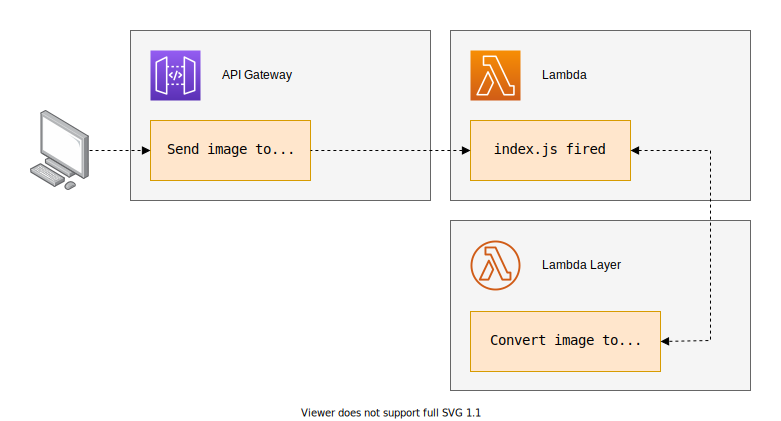
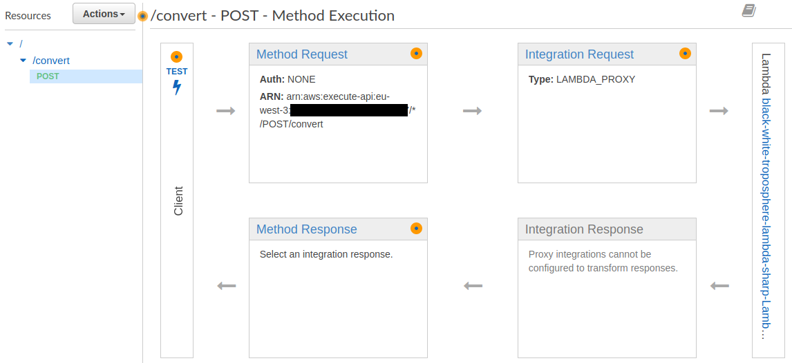
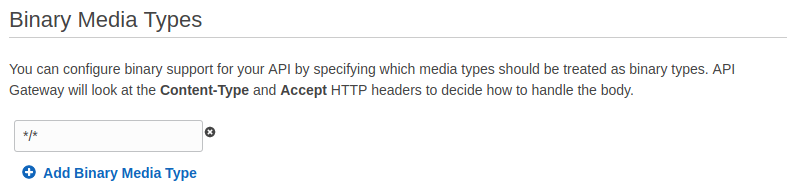
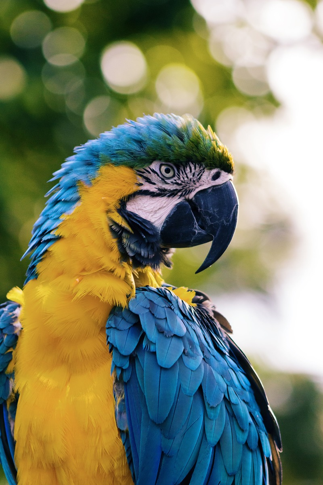

Troposphere + Lambda + Sharp

Install and setup the code
Get the code from this github repository :
# download the code
$ git clone \
--depth 1 \
https://github.com/jeromedecoster/black-white-troposphere-lambda-sharp.git \
/tmp/bw
# cd
$ cd /tmp/bw
To setup the project, you must edit the settings file first :
$ cat settings.sample.sh
# Project
AWS_REGION=eu-west-3
# CloudFormation
STACK_NAME=black-white-troposphere-lambda-sharp
# Lambda
S3_BUCKET=
SHARED_LAYER_ZIP=sharp-v1.zip
You can change some values, but the most important thing is to :
- Choose your region : the default value is AWS_REGION :
eu-west-3 - Define your S3 bucket : by default S3_BUCKET is
not defined
Your bucket will used to upload the Lamdba Layer zip file at :
https://<S3_BUCKET>.s3.<AWS_REGION>.amazonaws.com/layers/<SHARED_LAYER_ZIP>
After that you can execute the 1-setup.sh script. This will create the settings.sh file and build the Dockerfile :
# execute the setup
$ bash 1-setup.sh
Create the Lambda Layer
The Lambda code is very simple :
const sharp = require("sharp")
exports.handler = function (event, context, callback) {
sharp(Buffer.from(event.body, 'base64'))
.grayscale()
.toBuffer(function (err, data, info) {
var response = {
statusCode: 200,
headers: { 'Content-Type': 'image/jpeg' },
body: data.toString('base64'),
isBase64Encoded: true
}
callback(null, response);
})
}
We only use 1 node module, but sharp is really heavy : 35 Mo
$ du --summarize --human-readable node_modules
35M node_modules
We will create and use a Lambda Layer to deploy Lambda functions more easily but above all faster.
To create a Lambda Layer we need to execute 2-lambda-layer.sh script :
# create the Lambda Layer
$ bash 2-lambda-layer.sh
Please note the script installs node-prune if it is missing. It’s an important little software to solve the problem of the excessive weight of the node_modules directory.
Important : when you install locally sharp (via npm install), your local version of node must match the runtime you will be using on Lambda.
My Lambda function will use the runtime version nodejs12.x, so I use an equivalent locally :
$ node --version
v12.14.1
Create the CloudFormation stack with Troposphere
Writing a CloudFormation template by hand is not an enjoyable thing to do. Using Troposphere, you can automate the generation of templates. It increases readability and saves time.
Unfortunately the project is not really documented and the documentation is therefore poor. A good step is to look at the many examples.
Below, an overview of the tropo.py script :
t = Template()
# Create a role for the lambda function
t.add_resource(Role(
"LambdaExecutionRole",
Path="/",
Policies=[Policy(
PolicyName="inline-policy",
PolicyDocument={
"Version": "2012-10-17",
"Statement": [{
"Effect": "Allow",
"Action": [
"logs:CreateLogGroup",
"logs:CreateLogStream",
"logs:PutLogEvents"
],
"Resource": "*"
}, {
"Effect": "Allow",
"Action": [
"lambda:InvokeFunction"
],
"Resource": "*"
}]
})],
AssumeRolePolicyDocument={
"Version": "2012-10-17",
"Statement": [{
"Action": "sts:AssumeRole",
"Effect": "Allow",
"Principal": {
"Service": [
"lambda.amazonaws.com",
"apigateway.amazonaws.com" # important !
]
}
}]
}))
# create the Lambda function
layer = t.add_resource(LayerVersion(
"SharedLayer",
Content=Content(
S3Bucket=args.bucket,
S3Key=args.key # update the name to update layer version
)
))
# read Lambda code
code = open(args.code).read().strip().split("\n")
func = t.add_resource(Function(
"Lambda",
Code=Code(
ZipFile=Join("\n", code)
),
Handler="index.handler",
Role=GetAtt("LambdaExecutionRole", "Arn"),
Runtime="nodejs12.x",
MemorySize=128,
Timeout=50,
Layers=[Ref(layer)]
))
# ...
To generate the CloudFormation template we just need to execute something like this :
# generate the template
$ docker run \
--volume $PWD:/tmp \
troposphere python /tmp/tropo.py \
--bucket $S3_BUCKET \
--key layers/$SHARED_LAYER_ZIP \
--code /tmp/lambda/index.js \
--region $AWS_REGION \
> cloudformation.json
Instead, we will execute the 3-cloudformation.sh script :
$ bash 3-cloudformation.sh
Test the API with curl
The API Gateway is now online :

Important setting : the Binary Media Types in the settings section is set to */* :

Now we can convert this parrot image using curl :

To test it quickly, you can just execute the 4-curl.sh script :
$ bash 4-curl.sh
The script performs 3 simple steps :
# get the variables
$ source settings.sh
# get the API endpoint
$ URL=$(aws cloudformation describe-stacks \
--stack-name $STACK_NAME \
--query Stacks[0].Outputs[0].OutputValue \
--output text)
# send `bird.jpg` and save `bird-grey.jpg`
$ curl $URL/convert \
--header "Content-Type: image/png" \
--data-binary @bird.jpg \
--output bird-grey.jpg
It works !